Sometimes there may be cases where you have multiple services that need to be invoked in order to build the final response. Invoking these services in parallel may reduce latency.
JavaScript policies allow you to call services in parallel.
Imagine you have a service that invokes Google's Book APIs. And in your service, instead of having the client to call the API multiple times for different searches, you want to offer the option to pass in a comma-separated list of queries.
Your API:
https://api.example.com/books?query=google,apigee,chocolate
Should return one response with a list of books about Google, Apigee and chocolate.
In Google's current book API, you have to call the same API 3 times, 1 for each search term.
Example:
https://www.googleapis.com/books/v1/volumes?q=google
https://www.googleapis.com/books/v1/volumes?q=apigee
https://www.googleapis.com/books/v1/volumes?q=chocolate
Under Develop, click on API Proxies
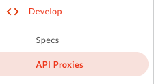
Click on ‘+ Proxy'
Enter the details for the proxy to be created. Select ‘No Target', click on Next
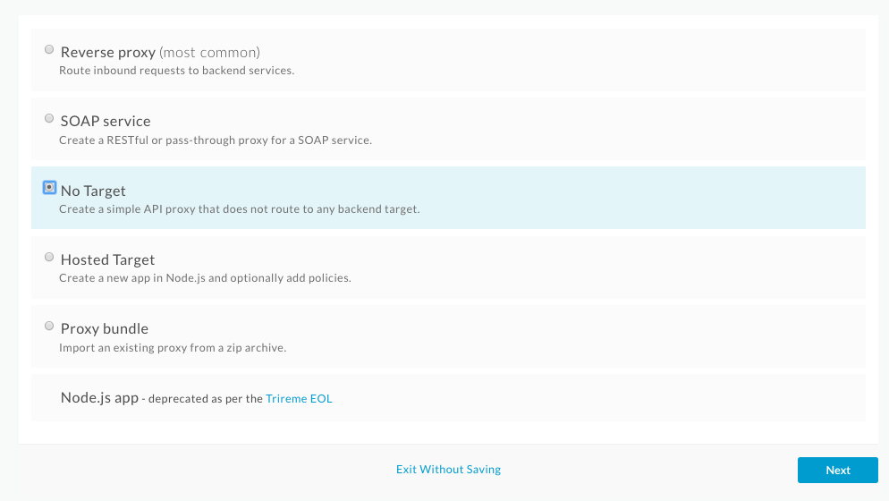
Specify the proxy details and click on Next:
Name | lab8b-v1 |
Proxy Base Path | /lab8b/v1 |
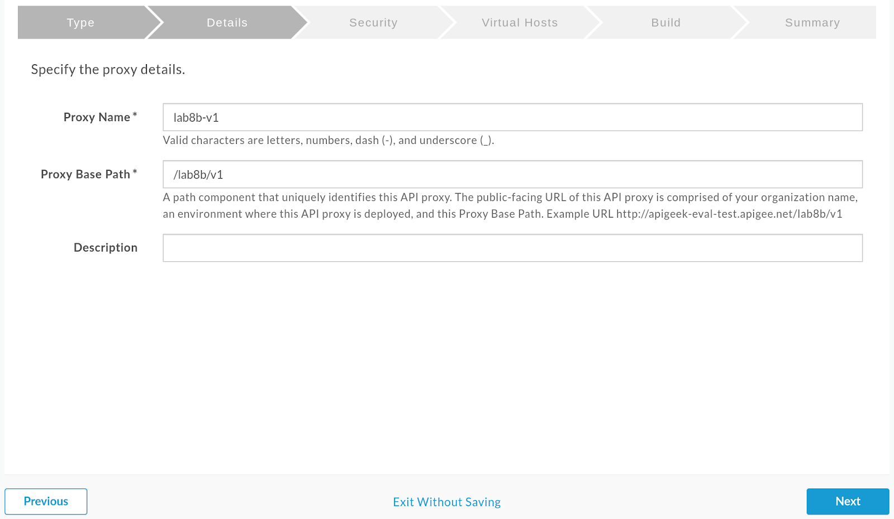
Select ‘pass through' for authorization, click on Next
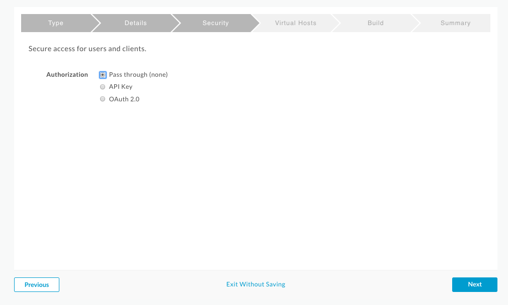
Deselect 'default', and make sure 'secure' is checked for the Virtual hosts, click on Next
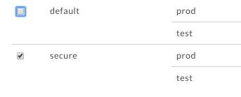
Finally, check the ‘test' environment and click on ‘Build and Deploy'
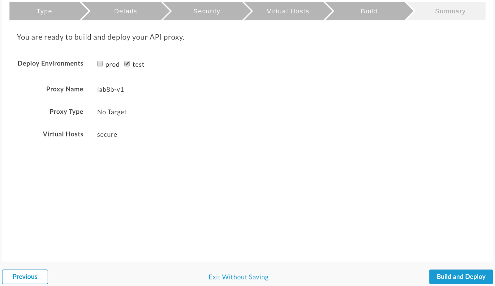
When done, you can click on View lab8b-v1 proxy in editor to see what's been created.
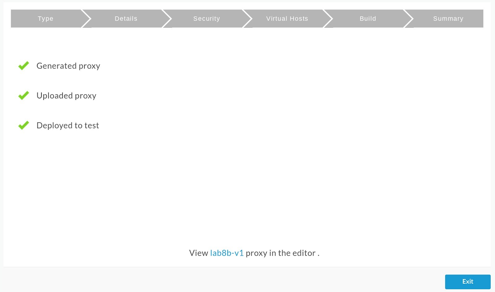
We'll be receiving the parameters as a comma separated list of queries, therefore, we'll need to first parse the list and then we can iterate on it.
Go to the ‘Develop' tab and select the PreFlow
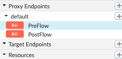
Add a new JavaScript policy, by clicking on ‘+ Step' in the request flow
Details:
Display Name | JS-SendRequests |
Name | JS-SendRequests |
Script File | Create new script |
Script Name | sendRequests.js |
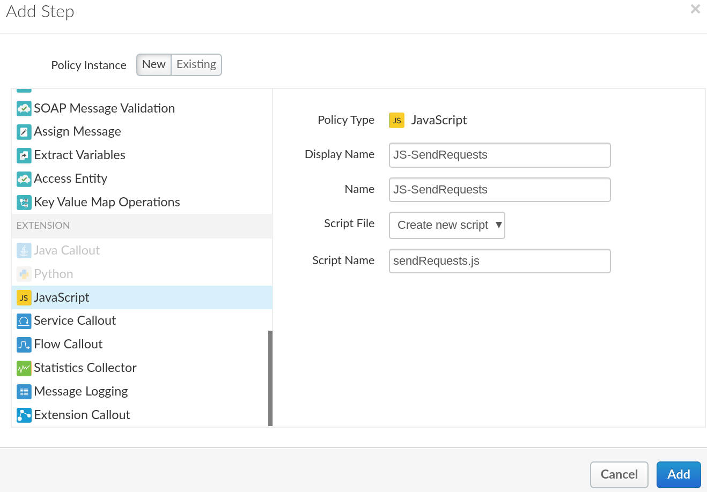
A new file will appear under Resources:
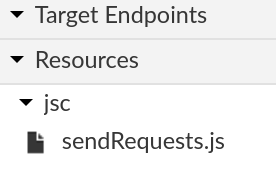
Click on it to see the JS code editor and enter the following:
// q is the query parameter with a comma separated list of topics for the books to be searched
var q = context.getVariable("request.queryparam.q").split(",");
print(q);
// URL to the Google Books API
var url="https://www.googleapis.com/books/v1/volumes?q=subject:";
// Iterate for each search term, call the Google API
for (var i=0; i < q.length; i++) {
print("" + i + ": " + q[i]);
print("GET " + url + ""+q[i]);
var req = httpClient.get(url+q[i]);
// store the request in a session for later retrieval
context.session[q[i]] = req;
}
print("done sending the requests");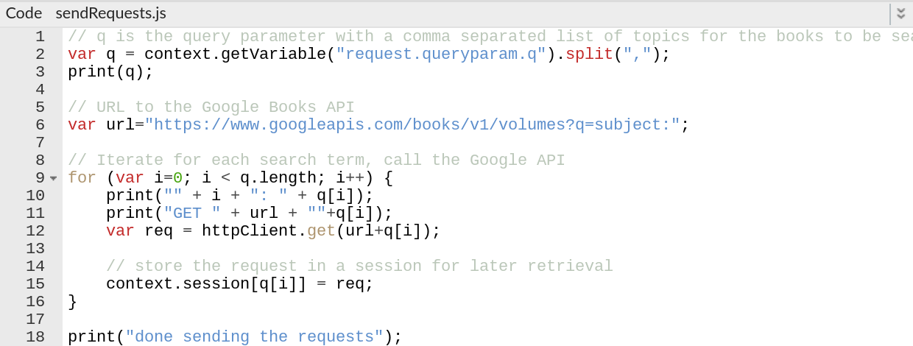
The code above will make a separate API request for each term passed into our API proxy, but will not wait until the response arrives. This means that all requests are made in parallel, or asynchronous.
The request objects are then stored in the context.session object -- other JavaScript policies can retrieve entities stored in context.session.
Save your proxy.
Similarly to how we handled the requests, we'll add a new JavaScript policy to handle the responses.
Click on ‘+ Step' in the PreFlow Request:
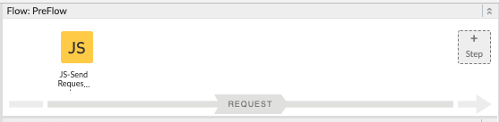
Display Name | JS-ProcessResponses |
Name | JS-ProcessResponses |
Script File | Create new script |
Script Name | processResponses.js |
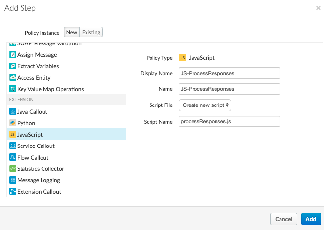
The new script will appear under Resources
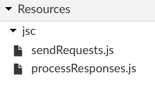
Click on processResponses.js to see the JS code editor and enter the following:
// q is a comma separated list of topics for the books to be searched
var q = context.getVariable("request.queryparam.q").split(",");
print(q);
var resp = [];
for (var i=0; i < q.length; i++) {
// retrieve request object from session
req = context.session[q[i]];
req.waitForComplete();
print("Got response for " + q[i]);
if (req.isSuccess()) {
item = {
query : q[i],
result : JSON.parse(req.getResponse().content)
};
resp.push(item);
print(item);
}
else {
item = {
query : q[i],
result : null
}
resp.push(item);
print(item);
}
}
print("done with responses");
// store response in a temporary flow variable
context.setVariable("myResp", JSON.stringify(resp));The code above will retrieve all the requests previously stored in the session, and wait for each to complete before attempting to read its response.
It will combine all responses into a single object.
Note that you could also have put the response JavaScript policy in the response flow if you wanted.
Our final step now is to make sure the client of our API receives our newly created response.
Click on the ‘+ Step' in the response flow for the PreFlow
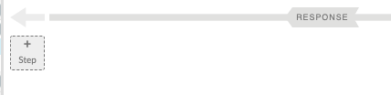
Select the AssignMessage policy and name it:
AM-SetResponse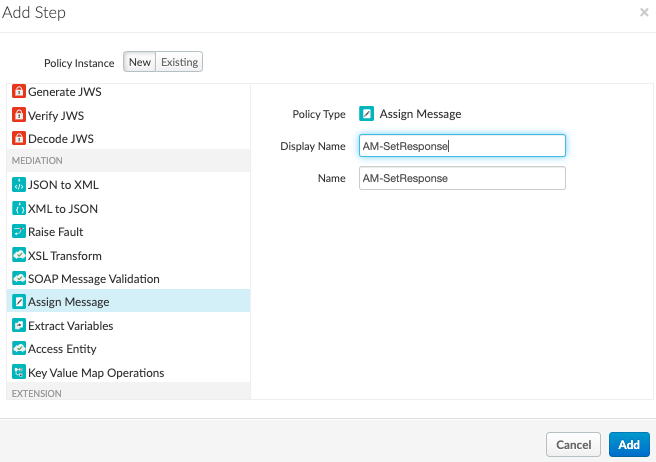
And make sure the code for the policy looks like:
<AssignMessage async="false" continueOnError="false" enabled="true" name="AM-SetResponse">
<Set>
<Payload contentType="application/json">{myResp}</Payload>
</Set>
<IgnoreUnresolvedVariables>true</IgnoreUnresolvedVariables>
<AssignTo createNew="false" transport="http" type="response"/>
</AssignMessage>Save your proxy.
To test it, invoke your proxy by passing the query parameter q with a list of terms to search books about.
Example:
> GET /lab8b?q=miami,dallas HTTP/1.1
< HTTP/1.1 200 OK
< Content-Type: application/json
[
{
"query":"miami",
"result":null
},
{
"query":"dallas",
"result":
{
"kind":"books#volumes",
...
}
}
]Note
Note 2
You have successfully created a proxy capable of invoking other APIs in parallel.